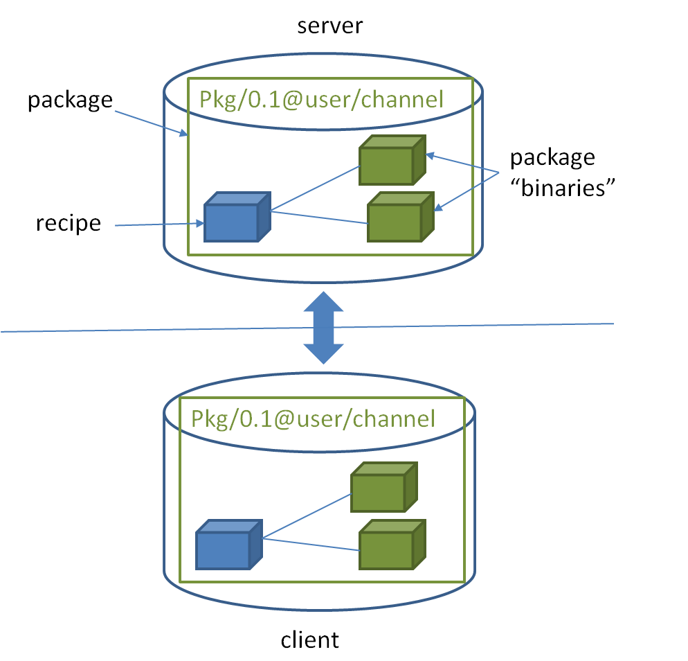

Introduction¶
Open Source¶
Conan is OSS, with an MIT license. Check out the source code and issue tracking (for reporting bugs and for feature requests) at https://github.com/conan-io/conan
Decentralized package manager¶
Conan is a decentralized package manager with a client-server architecture. This means that clients can fetch packages from, as well as upload packages to, different servers (“remotes”), similar to the “git” push-pull model to/from git remotes.
On a high level, the servers are just package storage. They do not build nor create the packages. The packages are created by the client, and if binaries are built from sources, that compilation is also done by the client application.

The different applications in the image above are:
- The Conan client: this is a console/terminal command line application, containing the heavy logic for package creation and consumption. Conan client has a local cache for package storage, and so it allows you to fully create and test packages offline. You can also work offline so long as no new packages are needed from remote servers.
- The Conan server: this is a TCP server that can be easily run as your own server on-premises to host your private packages. It is also a service application that can be run as a daemon or service, behind a web server (apache, nginx), or easily as stand-alone application. Both the Conan client and the conan_server are OSS, MIT license, so you can use them for free in your company, customize them, or redistribute them without any legal issue.
- JFrog Artifactory offers Conan repositories; so it can also be used as an on-premises server. It is a more powerful solution, featuring a WebUI, multiple auth protocols, High Availability, etc. It also has cloud offerings that will allow you to have private packages without having any on-premises infrastructure.
- JFrog Bintray provides a public and free hosting service for OSS Conan packages. Users can create their own repositories under their accounts and organizations, and freely upload Conan packages there, without moderation. You should, however, take into account that those packages will be public, and so they must conform to the respective licenses, especially if the packages contain third party code. Just reading or retrieving Conan packages from Bintray, doesn’t require an account, an account is only needed to upload packages. Besides that, Bintray provides a central repository called conan-center which is moderated, and packages are reviewed before being accepted to ensure quality.
Binary management¶
One of the most powerful features of Conan is that it can manage pre-compiled binaries for packages. To define a package, referenced by its name, version, user and channel, a package recipe is needed. Such a package recipe is a conanfile.py python script that defines how the package is built from sources, what the final binary artifacts are, the package dependencies, etc.
{kind=link}
When a package recipe is used in the Conan client, and a “binary package” is built from sources, that binary package will be compatible with specific settings, such as the OS it was created for, the compiler and compiler version, or the computer architecture. If the package is built again from the same sources but with different settings, (e.g. for a different architecture), a new, different binary will be generated. By the way, “binary package” is in quotes because, strictly, it is not necessarily a binary. A header-only library, for example, will contain just the headers in the “binary package”.
All the binary packages generated from a package recipe are managed and stored coherently. When they are uploaded to a remote, they stay connected. Also, different clients building binaries from the same package recipe (like CI build slaves in different operating systems), will upload their binaries under the same package name to the remotes.
Package consumers (client application users that are installing existing packages to reuse in their projects) will typically retrieve pre-compiled binaries for their systems in case such compatible binaries exist. Otherwise those packages will be built from sources on the client machine to create a binary package matching their settings.
Cross platform, build system agnostic¶
Conan works and is being actively used on Windows, Linux (Ubuntu, Debian, RedHat, ArchLinux, Raspbian), OSX, FreeBSD, and SunOS, and, as it is portable, it might work in any other platform that can run python. In the documentation, examples for a specific OS might be found, such as conan install . -s compiler="Visual Studio", which will be specific for Windows users. If on a different system, the reader should adapt to their own platform and settings (for example conan install . -s compiler=gcc).
Also Conan works with any build system. In the documentation, CMake will be widely used, because it is portable and well known. But Conan does not depend on CMake at all; it is not a requirement. Conan is totally orthogonal to the build system. There are some utilities that improve the usage of popular build systems such as CMake or Autotools, but they are just helpers. Furthermore, it is not necessary that all the packages are built with the same build system. It is possible to depend on packages created with other build system than the one you are using to build your project.
Stable¶
From Conan 1.0, there is a commitment to stability, not breaking user space while evolving the tool and the platform. This means:
- Moving forward to following minor versions 1.1, 1.2, …, 1.X should never break existing recipes, packages or command line flows
- If something is breaking, it will be considered a bug and reverted
- Bug fixes will not be considered breaking, recipes and packages relying on the incorrect behavior of such bug will be considered already broken.
- Only documented features are considered part of the public interface of Conan. Private implementation details, and everything not included in the documentation is subject to change.
- conanfile.py recipes should be defined according to the documentation in conanfile.py
- Configuration and automatic tools detection, like the detection of the default profile might be subject to change. Users are encouraged to define their configurations in profiles for repeatability. New installations of conan might use different configuration.
The compatibility is always considered forward. New APIs, tools, methods, helpers can be added in following 1.X versions. Recipes and packages created with these features will be backwards incompatible with earlier conan versions.
This means that public repositories, like conan-center assume the use of the latest version of the Conan client, and using an older version may result in failure of packages and recipes created with a newer version of the client.
Additionally, starting in version 1.6, we began the process of deprecating Python2 support. Features already working with python2 will continue to do so, but new ones may require Python3. See the deprecation notice for more details
If you have any question regarding Conan updates, stability, or any clarification about this definition of stability, please report in the documentation issue tracker: https://github.com/conan-io/docs.
Got any doubts? Please check out our FAQ section or write to us.